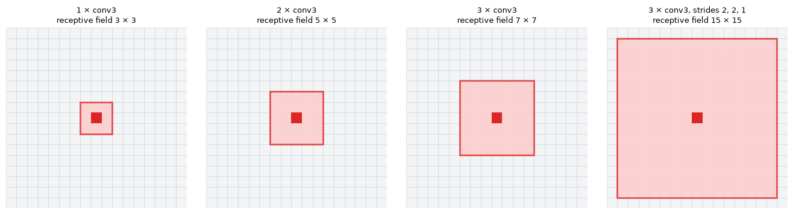
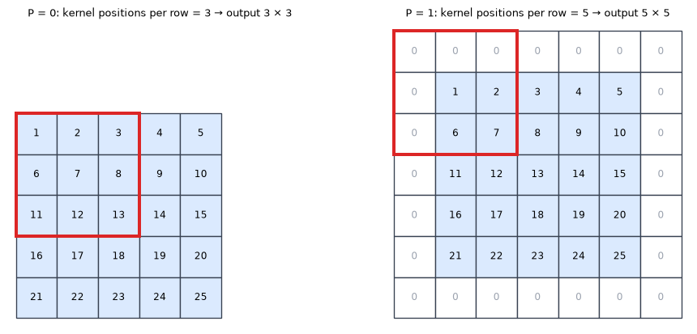
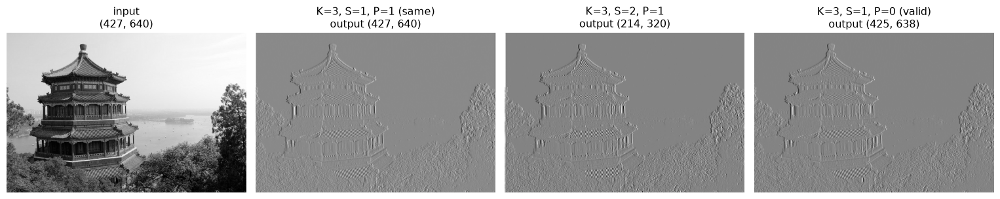

Conv Hyperparameters — Kernel, Stride, Padding
The three knobs you turn on every convolutional layer. Each has a geometric meaning, a formula, and a sensible default.
01 The three knobs
What they do
| Knob | Symbol | Controls |
|---|---|---|
| Kernel size | K | How much of the image one output pixel sees |
| Stride | S | How far the kernel moves between positions |
| Padding | P | How many zero-pixels are added around the input border |
The master formula
For an input of width W:
Everything in this note is cases of this formula. Height follows the same equation.
02 Kernel size
The tradeoff
| Kernel size | Params per filter (RGB in) | What it sees |
|---|---|---|
| 1×1 | 3 | Just the pixel — used for channel-wise mixing (bottleneck blocks) |
| 3×3 | 27 | The pixel and its 8 neighbours — modern default |
| 5×5 | 75 | 24 neighbours |
| 7×7 | 147 | 48 neighbours — the ResNet stem (AlexNet's first layer was even 11×11) |
Common values and when to use them
- 3×3 — modern default. VGG proved stacking many 3×3s beats a single large kernel at the same receptive field with fewer parameters.
- 1×1 — pointwise convolution. No spatial mixing, just channel-wise linear combination. Used for dimensionality reduction (bottleneck blocks in ResNet, Inception).
- 5×5, 7×7 — early-layer stems and legacy architectures.
- Rarely even — 2×2 or 4×4 complicate alignment with the pixel grid.
Rule of thumb: when in doubt, use 3×3 everywhere.
The "small kernels stacked deep" trick
Two stacked 3×3 convs cover the same receptive field as one 5×5 conv — but with:
- 18 parameters vs 25 per filter.
- Two non-linearities instead of one — more expressive.
Three stacked 3×3s match a 7×7 (27 vs 49 params). This is why VGG dropped the big kernels of AlexNet.
Receptive field
A neuron's receptive field is the patch of the original input that can affect it. In the first conv layer it is just the kernel, K \times K. Stack layers and it grows: a neuron in layer 2 looks at a 3 \times 3 patch of layer 1, and each of those looked at 3 \times 3 of the input, so together they cover 5 \times 5.
For a stack of layers with kernel sizes K_\ell and strides S_\ell, the receptive field r grows as
so with stride 1 everywhere, L layers of 3 \times 3 see (2L + 1) \times (2L + 1), and every stride (or pooling) of 2 doubles how fast it grows after that point. This is how deep layers come to "see" whole objects while every individual kernel stays small.

Python code for this figure
import matplotlib.pyplot as plt
from matplotlib.patches import Rectangle
def rf(layers): # layers: list of (kernel, stride)
r, jump = 1, 1
for k, s in layers:
r += (k - 1) * jump; jump *= s
return r
cases = [[(3, 1)], [(3, 1)] * 2, [(3, 1)] * 3, [(3, 2), (3, 2), (3, 1)]]
names = ["1 × conv3", "2 × conv3", "3 × conv3", "3 × conv3, strides 2, 2, 1"]
fig, axes = plt.subplots(1, 4, figsize=(14, 3.6))
for ax, layers, name in zip(axes, cases, names):
N = 17
for i in range(N):
for j in range(N):
ax.add_patch(Rectangle((j, i), 1, 1, fc="#f3f4f6", ec="#d1d5db", lw=0.5))
r = rf(layers); o = (N - r) / 2
ax.add_patch(Rectangle((o, o), r, r, fc="#fecaca", ec="#dc2626", lw=2, alpha=0.8))
ax.add_patch(Rectangle((8, 8), 1, 1, fc="#dc2626"))
ax.set_title(f"{name}\nreceptive field {r} × {r}", fontsize=10)
ax.set_xlim(0, N); ax.set_ylim(0, N); ax.set_aspect("equal"); ax.axis("off")
plt.tight_layout(); plt.show()1 × 1 convolutions
A 1 \times 1 kernel looks at a single pixel, so it does no spatial mixing at all, and yet it is one of the most useful layers. At each pixel it takes the vector of C_{\text{in}} channel values and applies the same small dense layer to it, producing C_{\text{out}} values. Two uses:
- Cheaper channels: turning a 56 \times 56 \times 192 volume into 56 \times 56 \times 32 with 32 filters of size 1 \times 1 \times 192, before an expensive 3 \times 3 or 5 \times 5 (the "bottleneck" in Inception and ResNet, note 19).
- More non-linearity for free: a 1 \times 1 conv followed by ReLU adds a layer of depth without changing the receptive field ("network in network").
import torch
import torch.nn as nn
x = torch.randn(1, 192, 56, 56)
squeeze = nn.Conv2d(192, 32, kernel_size=1)
print("1×1 conv:", tuple(x.shape), "→", tuple(squeeze(x).shape), f" params {sum(p.numel() for p in squeeze.parameters()):,}")
direct = nn.Conv2d(192, 64, kernel_size=5, padding=2)
bottleneck = nn.Sequential(nn.Conv2d(192, 32, 1), nn.ReLU(), nn.Conv2d(32, 64, 5, padding=2))
count = lambda m: sum(p.numel() for p in m.parameters())
print(f"5×5 conv 192→64 directly: {count(direct):,} params with a 1×1 bottleneck to 32 first: {count(bottleneck):,}")1×1 conv: (1, 192, 56, 56) → (1, 32, 56, 56) params 6,176 5×5 conv 192→64 directly: 307,264 params with a 1×1 bottleneck to 32 first: 57,440
03 Stride
Common strides
- S = 1 — the default. Output has (almost) the same size as input. Dense feature extraction.
- S = 2 — downsamples by 2×. Faster, smaller feature maps, used instead of or alongside pooling.
- S ≥ 3 — rare, aggressive downsampling. Reserved for the very first layer of some architectures.
The output size with stride
Example — input 32, kernel 3, stride 2 (no padding):
Why stride > 1 is useful
- Reduces compute. Each additional stride-2 layer quarters the number of operations in all downstream layers.
- Grows the receptive field faster. After a stride-2 layer, every later kernel step covers twice as many input pixels (see Receptive field above).
- Replaces pooling. Modern architectures often use strided conv instead of a conv + pool combo.
04 Padding — valid and same

Python code for this figure
import numpy as np
import matplotlib.pyplot as plt
from matplotlib.patches import Rectangle
n, P, K = 5, 1, 3
fig, axes = plt.subplots(1, 2, figsize=(10, 4.4))
for ax, pad in zip(axes, (0, P)):
N = n + 2 * pad
for i in range(N):
for j in range(N):
inside = pad <= i < pad + n and pad <= j < pad + n
ax.add_patch(Rectangle((j, N - 1 - i), 1, 1, fc="#dbeafe" if inside else "white", ec="#374151"))
ax.text(j + 0.5, N - 0.5 - i, str((i - pad) * n + (j - pad) + 1) if inside else "0", ha="center", va="center", fontsize=9,
color="black" if inside else "#9ca3af")
ax.add_patch(Rectangle((0, N - K), K, K, fill=False, ec="#dc2626", lw=3))
out = (N - K) + 1
ax.set_title(f"P = {pad}: kernel positions per row = {out} → output {out} × {out}", fontsize=10)
ax.set_xlim(-0.2, 7.2); ax.set_ylim(-0.2, 7.2); ax.set_aspect("equal"); ax.axis("off")
plt.tight_layout(); plt.show()Why pad
Without padding, every conv layer shrinks the image. After many layers you run out of pixels, and the border pixels get "seen" by the kernel far fewer times than central pixels do.
Padding fixes both:
- Preserves spatial size so you can stack many layers.
- Edge pixels get fairer treatment — without padding a corner pixel is covered by only one kernel position, an interior pixel by nine; padding lets the kernel centre on the border too.
Two padding modes
| Mode | What it does |
|---|---|
| Valid | No padding. W_{\text{out}} = W - K + 1. Output shrinks. |
| Same | Padding chosen so output size = input size (at stride 1). |
For a kernel size K, "same" padding at stride 1 means P = (K - 1) / 2. So:
- K = 3 \to P = 1
- K = 5 \to P = 2
- K = 7 \to P = 3
Padding values
Zero-padding (padding_mode='zeros') is the standard. Alternatives:
- Reflect — mirror the edge pixels. Best for natural images.
- Replicate — repeat the edge pixel. Simple, no dark border artefacts.
- Circular — wrap-around. Rare, used for periodic data.
Zero works fine for almost everything. The others matter only when border artefacts actually show up in your task.
05 The output-size formula
The equations
Memorise this one case
Default settings for a "same" convolution: K=3, S=1, P=1.
Output size = input size. Easy to stack. Default for almost all modern architectures.
The floor matters
The floor means that non-divisible combinations silently truncate. Input 7, kernel 3, stride 2, no padding:
But input 8 gives the same answer:
The extra pixel of the input is thrown away — the kernel doesn't fit at the last position. Use padding to avoid this if you care about keeping every pixel.
06 Worked examples
Example 1 — basic convolution
- Input: 32 × 32 × 3
- Kernel: 5 × 5
- Padding: 0 (valid)
- Stride: 1
- Filters: 5
Output: 28 × 28 × 5
Example 2 — downsampling convolution
- Input: 32 × 32 × 3
- Kernel: 3 × 3
- Padding: 1 (same)
- Stride: 2
- Filters: 64
Output: 16 × 16 × 64
Spatial dimensions halved, channel depth boosted — the classic downsampling-and-extracting-features pattern.
07 Runnable demo
import torch
import torch.nn as nn
def shape_of(layer, in_shape=(1, 3, 32, 32)):
x = torch.randn(in_shape)
return tuple(layer(x).shape)
# Example 1: K=5, S=1, P=0, 5 filters -> (N, 5, 28, 28)
conv1 = nn.Conv2d(in_channels=3, out_channels=5, kernel_size=5, stride=1, padding=0)
print(f"Ex1 — Conv2d(3,5,K=5,S=1,P=0): input (1,3,32,32) -> output {shape_of(conv1)}")
# Example 2: K=3, S=2, P=1, 64 filters -> (N, 64, 16, 16)
conv2 = nn.Conv2d(3, 64, kernel_size=3, stride=2, padding=1)
print(f"Ex2 — Conv2d(3,64,K=3,S=2,P=1): input (1,3,32,32) -> output {shape_of(conv2)}")
# Verify by formula
def out_size(W, K, P, S): return (W - K + 2*P) // S + 1
print(f"\nFormula check:")
print(f" Ex1: out = {out_size(32, 5, 0, 1)}")
print(f" Ex2: out = {out_size(32, 3, 1, 2)}")Ex1 — Conv2d(3,5,K=5,S=1,P=0): input (1,3,32,32) -> output (1, 5, 28, 28) Ex2 — Conv2d(3,64,K=3,S=2,P=1): input (1,3,32,32) -> output (1, 64, 16, 16) Formula check: Ex1: out = 28 Ex2: out = 16
Visualise what each knob does
import matplotlib.pyplot as plt
import numpy as np
from sklearn.datasets import load_sample_images
img = load_sample_images().images[0].mean(axis=2)[None, None, :, :] # (1,1,H,W)
img_t = torch.tensor(img, dtype=torch.float32)
# Three convs with different hyperparameters, all with a Sobel-X-like learned kernel
# For visual demo, use a fixed kernel
sobel_x = torch.tensor([[[[-1, 0, 1], [-2, 0, 2], [-1, 0, 1]]]], dtype=torch.float32)
configs = [
('K=3, S=1, P=1 (same)', dict(kernel_size=3, stride=1, padding=1)),
('K=3, S=2, P=1', dict(kernel_size=3, stride=2, padding=1)),
('K=3, S=1, P=0 (valid)', dict(kernel_size=3, stride=1, padding=0)),
]
fig, axes = plt.subplots(1, 4, figsize=(16, 4))
axes[0].imshow(img[0, 0], cmap='gray'); axes[0].set_title(f'input\n{img.shape[2:]}')
for ax, (label, cfg) in zip(axes[1:], configs):
conv = nn.Conv2d(1, 1, bias=False, **cfg)
conv.weight.data = sobel_x
out = conv(img_t).detach()[0, 0].numpy()
ax.imshow(out, cmap='gray')
ax.set_title(f'{label}\noutput {out.shape}')
for ax in axes: ax.axis('off')
plt.tight_layout(); plt.show()
Build a layer sequence and track shapes
# A typical early-CNN stack
layers = nn.Sequential(
nn.Conv2d(3, 32, kernel_size=3, padding=1), # 32x32 -> 32x32
nn.ReLU(),
nn.Conv2d(32, 64, kernel_size=3, stride=2, padding=1), # 32x32 -> 16x16
nn.ReLU(),
nn.Conv2d(64, 128, kernel_size=3, stride=2, padding=1), # 16x16 -> 8x8
nn.ReLU(),
)
x = torch.randn(1, 3, 32, 32)
print(f"input: {tuple(x.shape)}")
for i, layer in enumerate(layers):
x = layer(x)
print(f" layer {i} ({type(layer).__name__}): {tuple(x.shape)}")input: (1, 3, 32, 32) layer 0 (Conv2d): (1, 32, 32, 32) layer 1 (ReLU): (1, 32, 32, 32) layer 2 (Conv2d): (1, 64, 16, 16) layer 3 (ReLU): (1, 64, 16, 16) layer 4 (Conv2d): (1, 128, 8, 8) layer 5 (ReLU): (1, 128, 8, 8)